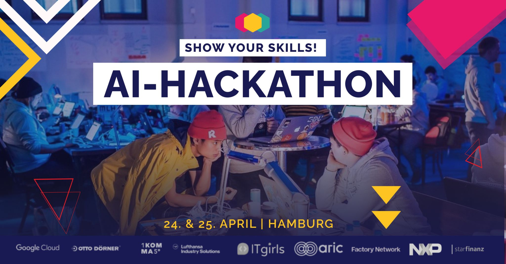

LLM-Agentensysteme für Analytics und Prognosen.
AI Engineer und Data Scientist mit Schwerpunkt auf Analytics Engineering, Zeitreihenprognosen mit Foundation-Modellen und LLM-Agentensystemen. Bei InnoGames liegt mein Hauptfokus auf durchgängiger Power-BI-Datenmodellierung, Reporting und der Migration von Analytics für sechs Spiele zu Microsoft Fabric, ergänzt durch ein Claude-Code-Multi-Agenten-Toolkit zur automatisierten PBIP/TMDL-Berichtserstellung. Parallel dazu zielt mein Unternehmensprojekt und meine M.Sc.-Abschlussarbeit an der Leuphana Universität darauf ab, die Genauigkeit und Unsicherheitsintervalle von Dreimonats-Nettoumsatzprognosen mittels eingefrorener Foundation-Modelle (TabPFN-TS, Zero-Shot) und Kalender-Flags zu verbessern und den Mehrwert agentenkompilierter Text-Kovariaten aus Planungsdokumenten zu erforschen. Ich bringe zehn Jahre Analytics-Erfahrung aus Gaming, Telekommunikation, Finanzwesen und Versicherung mit.
Umsatzprognosen für Free-to-Play-Spiele mit Foundation-Modellen und agentenkompilierten Text-Kovariaten
Mein Unternehmensprojekt bei InnoGames, zugleich meine M.Sc.-Abschlussarbeit an der Leuphana Universität, zielt darauf ab, die Genauigkeit und die Prognoseintervalle von Dreimonats-Nettoumsatzprognosen mittels eines eingefrorenen tabellarischen Foundation-Modells (TabPFN-TS) ohne aufgabenspezifisches Nachtraining (Zero-Shot) zu verbessern. Die Arbeit untersucht, ob und wie agentenkompilierte Kovariaten, Rohtext-Merkmale und Embeddings aus versionierten Planungstexten einen messbaren Mehrwert über Kalender-Flags hinaus liefern – abgesichert durch strenge Vintage-Guards und placebokontrollierte Benchmarks, um echten Textinhalt von rein zeitlichen Effekten zu trennen.
Die Experimente über 49 monatliche Stichtage zeigen, dass das eingefrorene Foundation-Modell mit Kalender-Flags die bestehenden Produktionsprognosen bei allen untersuchten Spielen übertrifft; derzeit verfasse ich die Abschlussarbeit für die Abgabe im Dezember 2026.
Datenmodellierung, Power-BI-Analytics und Microsoft-Fabric-Pipelines, erweitert um LLM-Agentensysteme und Zeitreihenprognosen mit Foundation-Modellen.
Bei InnoGames liegt mein Hauptfokus auf Business Intelligence und Data Engineering in Power BI und Microsoft Fabric. Ich entwerfe semantische Datenmodelle, entwickle umfassende Reportings und Dashboards für Spieler-Engagement und Monetarisierung für sechs Live-Spiele, führe A/B-Test- sowie Churn-Analysen durch und verantworte die Migration des täglichen Berichtswesens zu Microsoft Fabric. Um diesen Workflow zu beschleunigen und abzusichern, habe ich ein Claude-Code-Multi-Agenten-Toolkit für die automatisierte Erstellung und Pflege von PBIP/TMDL-Berichten mit Freigabe-, Validierungs- und Eskalationsmechanismen entwickelt.
Parallel dazu untersucht mein Unternehmensprojekt und meine M.Sc.-Abschlussarbeit an der Leuphana Universität die Verbesserung der Prognosegenauigkeit und kalibrierter Unsicherheitsintervalle mittels eingefrorener Foundation-Modelle (TabPFN-TS) ohne aufgabenspezifisches Training, kombiniert mit Kalender-Flags und der Erforschung agentenkompilierter Text-Kovariaten aus Planungsdokumenten.
Derzeit schließe ich meinen M.Sc. in Management & Data Science an der Leuphana Universität als Deutschlandstipendiat ab. Ab April 2027 stehe ich für Vollzeitpositionen als AI Engineer oder Data Scientist in Deutschland zur Verfügung.
Ausgewählte Projekte: LLM-Agentensysteme, Wissensgraphen und bayesianische Modellierung
Wofür ich arbeite
Meine Projekte umfassen LLM-Agentensysteme, Zeitreihenprognosen, bayesianische Modellierung und Wissensgraph-Anwendungen. Dazu zählen ein Multi-Agenten-Toolkit, das von einem Analytics-Team genutzt wird, ein Frage-Antwort-System über Wissensgraphen, ein hierarchisches bayesianisches Modell für den Customer Lifetime Value und ein Multi-Agenten-Assistent für Unternehmensgründungen.
Spielumsatzprognosen mit Foundation-Modellen
Unternehmensprojekt bei InnoGames und Leuphana-M.Sc.-Abschlussarbeit: Verbesserung der Genauigkeit und Unsicherheitsintervalle von Dreimonats-Nettoumsatzprognosen mit einem eingefrorenen tabellarischen Foundation-Modell (TabPFN-TS, Zero-Shot) und Kalender-Flags, sowie Untersuchung agentenkompilierter Planungsdaten.
TabPFN-3.5 vs. bayessches Pareto/NBD
Benchmark für den TabPFN-3.5 Hackathon von Prior Labs: Wann ein tabellarisches Foundation-Modell spezialisierte bayessche Kundenmodelle bei der Vorhersage der 90-Tage-Rückkehr schlägt, geprüft auf unberührten Holdout-Zeitpunkten mit Lernkurven und Bootstrap-Intervallen.
Multi-Agenten-Toolkit für Power-BI-Report-Änderungen
Multi-Agenten-Toolkit auf Basis von Claude Code, im ganzen Analytics-Team genutzt: Es plant, implementiert und verifiziert Power-BI-Dashboard-Änderungen in PBIP/TMDL ohne Schritt-für-Schritt-Anleitung.

ChefTreff AI Hackathon: Gründer-Assistent
Multi-Agenten-Assistent, der Gründerinnen und Gründer bei der Unternehmensgründung in Deutschland unterstützt: Businessplan, Marketingplan und rechtliche Dokumentation.
Knowledge Graph Question Answering
SPARQL-basierte Fragebeantwortung über strukturierte Wissensgraphen, ermöglicht Abfragen in natürlicher Sprache über RDF-Wissensbasen.
KVG: ÖPNV-Routenplanung in Lüneburg
ML zur Modellierung und Vorhersage lokaler Buslinien für KVG, unter Kombination von Geodaten des öffentlichen Nahverkehrs mit prädiktiver Modellierung.
Neo4j Graph Analysis of Artist Influence Networks
Graph-Datenbanklösung mit Neo4j und Cypher zur Analyse des künstlerischen Einflusses und zur Clusterung musikalischer Genealogien.
Hierarchical Bayesian Pareto/NBD: Replication of Abe (2009)
Implementierung und Validierung des hierarchischen Bayesianischen Pareto/NBD-Modells aus Abe (2009) am kanonischen CDNOW-Datensatz.
ChefTreff AI Hackathon: Product Detection
In 24 Stunden entwickelt: eine Computer-Vision-Pipeline zur Erkennung beschädigter oder defekter Objekte in Produktbildern.
Beiträge zu LLM-Agentensystemen und angewandtem maschinellem Lernen
Verfügbar in Deutschland ab April 2027, bevorzugt in München, Hamburg oder Düsseldorf.
Ich interessiere mich für Positionen als AI Engineer oder Data Scientist mit Schwerpunkt auf LLM-basierten Systemen, Prognoseautomatisierung oder Analytics-Plattformen. Dabei verbinde ich praktische Erfahrung in der KI-Entwicklung mit zehn Jahren Erfahrung in der Umsetzung fachlicher Anforderungen in wartbare Daten- und Analytics-Lösungen.
Meine Arbeit passt gut zu sechs Arten von Teams:
- Versicherungs- und Rückversicherungs-Analytics. Underwriting-Segmentierung bei Absolute Insurance und aktuelle bayesianische Prognoseverfahren, anwendbar auf den Münchner Versicherungs-Cluster und darüber hinaus.
- Gaming und Consumer Products. Prototypen für Umsatzprognosen und Aufbau von Analytics-Infrastruktur bei InnoGames in Hamburg, inklusive Migration nach Microsoft Fabric und Power-BI-Dashboards.
- KI-native Startups und angewandte KI-Labs mit Fokus auf LLM-Systeme, Agenten-Architekturen und Retrieval. Ich habe ein Multi-Agenten-Toolkit entwickelt und eingeführt, das ein Analytics-Team täglich nutzt, und mein Unternehmensprojekt für Umsatzprognosen, zugleich meine M.Sc.-Abschlussarbeit, vergleicht verschiedene Wege, Planungstexte in Prognosen einzubeziehen.
- Telekommunikations- und Netzwerk-Analytics. Acht Jahre bei MTS mit Marktanalyse und M&A für die Märkte Indien, Serbien, Slowenien und Moldau, relevant für Telekommunikationsunternehmen und Netzbetreiber, unter anderem in München.
- Global agierende Tech-Firmen und Plattformteams in München, Hamburg und Düsseldorf, in denen Prognosen, angewandtes ML und produktive Analytics-Lösungen produktübergreifend skalieren.
- Startups und Scale-ups, bei denen produktives ML und Agentensysteme das Kernprodukt bilden und kein Pilotprojekt bleiben.
Ich arbeite auf Englisch (C1, IELTS 8,0) und Deutsch (B2). Meine Analytics-Erfahrung umfasst internationale Teams in Finanzwesen, Telekommunikation, Versicherung und Gaming.